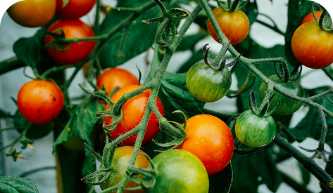
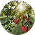
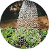
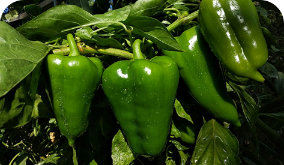

Every Crop Has A Story. Know Yours Better.
Browse crop profiles, learn about common diseases and symptoms, and keep everything you need to know about your crops in one place.


Crop Directory
Explore Crops By Category
Vegetables
Explore vegetable crops
Explore Category
Field crops
Browse field crop guides
Explore Category

Fruit crops
Discover fruit varieties
Explore Category

All crops
View complete directory
View All
Featured Crops
Crops In Our Initial Collection

Why Explore With Agri Vision?
Useful Crop Knowledge, Made Easier
Crop information
Browse crop profiles in one place.
Plant health topics
Explore example disease classes.
AI-assisted support
Continue to plant image analysis.
Get Started In Three Steps
Useful Crop Knowledge, Made Easier
1
2
3